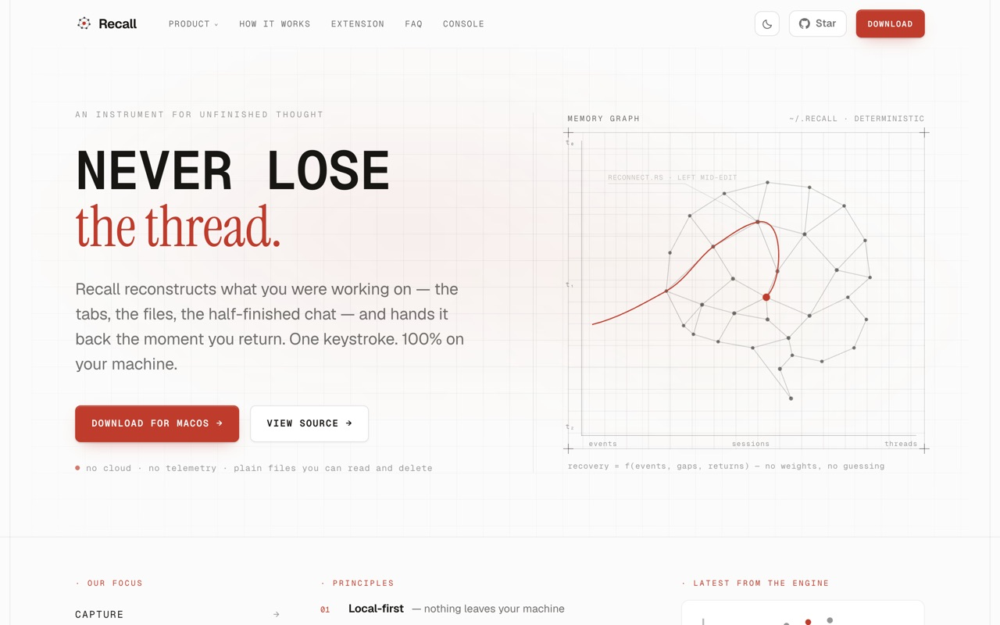

PLATE Ø1
LIVE

web-seven-puce-99.vercel.appRecall
// because I kept losing my own unfinished work.
Work scatters — the tabs, the files, the half-finished chat — and the context evaporates between sessions. Recall is a local-first continuity engine: a browser extension and watchers stream activity into a daemon that stores events, scores recovery and ranks what mattered, with semantic search across all of it. A Qt launcher hands the thread back — one keystroke, 100% on your machine. No cloud, no telemetry, plain files you can read and delete.
↳ solo build — extension → daemon → recovery interface, end to end.
pythonqtbrowser extensiondaemon apissemantic search
0
signal streams — browser · file · dev
LOCAL
first — nothing leaves the machine
macOS
site & download shipped